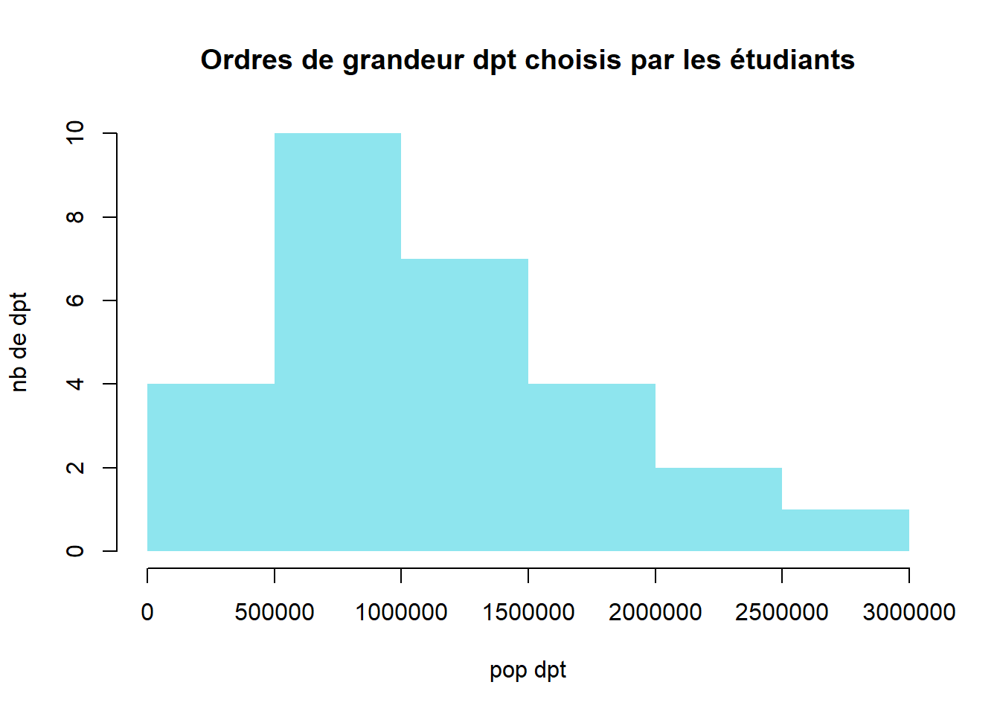
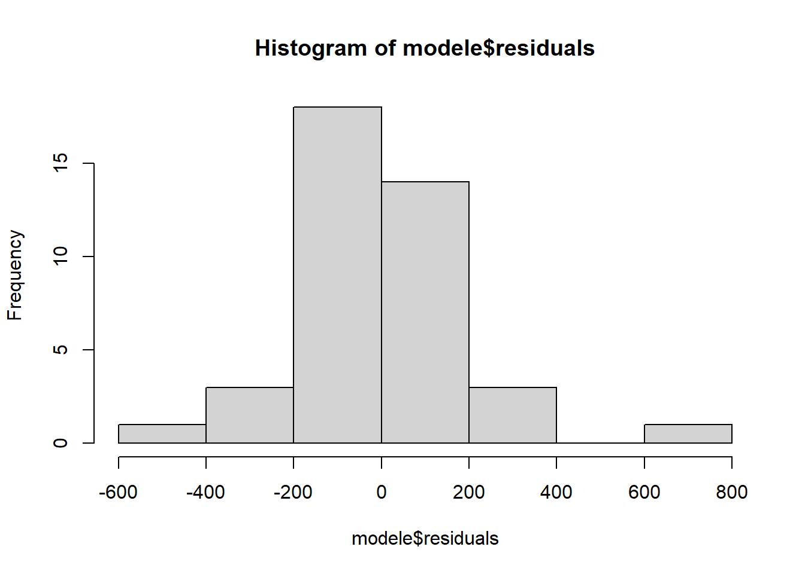
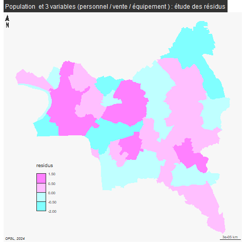
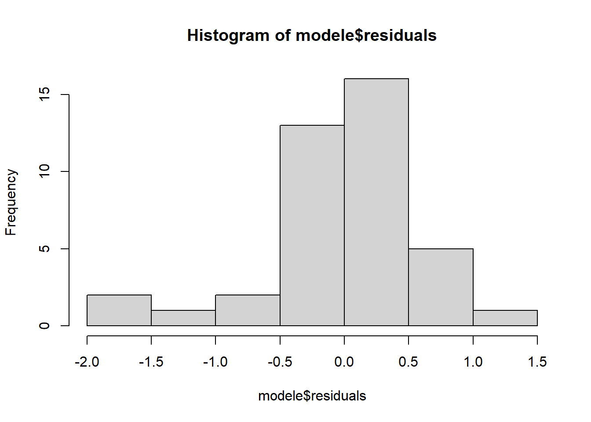

Multivariées : régression linéaire multiples
## Linking to GEOS 3.12.1, GDAL 3.8.4, PROJ 9.3.1; sf_use_s2() is TRUE1 Préparation de la donnée
Il s’agit de réfléchir à de nombreux X pour expliquer un seul Y
Dans notre exemple, nous reprenons comme
facteur à expliquer (Y) = les frais de personnel
facteurs explicatifs (X) = les dépenses d’équipement, les emprunts, et les ventes de biens et service
Le choix des variables est très important, il ne faut notamment pas qu’elles soient corrélées entre elles, ce qui, sur nos données, est assez difficile puisqu’il s’agit de comptes équilibrés.
… Mais avoir une situation où une seule variable est expliquée par plusieurs autres reste une gageure.
exemples utilisés dans l’ouvrage de référence, le chadule :
précipitation par longitude et latitude
vote pour LE PEN et étrangers, délinquants, chômeurs, population urbaine
## [1] "Exercice"
## [2] "Outre.mer"
## [3] "Code.Insee.2024.Région"
## [4] "Nom.2024.Région"
## [5] "Code.Insee.2024.Département"
## [6] "Nom.2024.Département"
## [7] "Code.Siren.2024.EPCI"
## [8] "Nom.2024.EPCI"
## [9] "Strate.population.2024"
## [10] "Commune.rurale"
## [11] "Commune.de.montagne"
## [12] "Commune.touristique"
## [13] "Tranche.revenu.par.habitant"
## [14] "Présence.QPV"
## [15] "Code.Insee.2024.Commune"
## [16] "Nom.2024.Commune"
## [17] "Catégorie"
## [18] "Code.Siren.Collectivité"
## [19] "Code.Insee.Collectivité"
## [20] "Siret.Budget"
## [21] "Libellé.Budget"
## [22] "Type.de.budget"
## [23] "Nomenclature"
## [24] "Agrégat"
## [25] "Montant"
## [26] "Montant.en.millions"
## [27] "Population.totale"
## [28] "Montant.en...par.habitant"
## [29] "Compte.2024.Disponible"
## [30] "code_type_budget"
## [31] "ordre_analyse1_section1"
## [32] "ordre_analyse1_section2"
## [33] "ordre_analyse1_section3"
## [34] "ordre_analyse2_section1"
## [35] "ordre_analyse2_section2"
## [36] "ordre_analyse2_section3"
## [37] "ordre_analyse3_section1"
## [38] "ordre_analyse3_section2"
## [39] "ordre_analyse3_section3"
## [40] "ordre_analyse4_section1"
## [41] "annee_join"
## [42] "Population.totale.du.dernier.exercice"# filtre colonne
data <- data [, c(16, 24,28)]
names(data) <- c("commune", "agregat", "montant")
table(data$agregat)##
## Dépenses d'équipement Emprunts hors GAD
## 40 40
## Frais de personnel Ventes de biens et services
## 40 402 Etude de chaque régression
varX <- names(table(data$agregat))
personnel <- data [data$agregat == "Frais de personnel", c(1,3)]
names (personnel) [2] <- "personnel"
png("img/regressionChoix.png", width = 1400, height = 1400, res = 200)
par(mfrow = c(2,2))
fin <- personnel
for (v in varX){
tmp <- data [data$agregat==v, c(1,3)]
names(tmp) [2] <- v
jointure <- merge(tmp, personnel, by = "commune")
plot(jointure [,v] ,jointure$personnel, ylab = "Frais de personnel", xlab = v, col="coral", pch = 16)
tmp <- jointure [, 2]
fin <- cbind(fin, tmp)
}
dev.off()## png
## 2
A vue de nez, il peut exister une relation entre les variables choisies et les dépenses de personnel, même s’il y a beaucoup de valeurs aberrantes.
3 Modèle de régression multiple
3.1 Préparation de la donnée
## commune personnel equipement emprunt personnel2 services
## 81 Aubervilliers 955.4334 317.8120 0.8473069 955.4334 98.85818
## 82 Aulnay-sous-Bois 1091.0099 245.2081 14.7790754 1091.0099 138.33674
## 83 Bagnolet 1145.4187 452.2312 111.4121490 1145.4187 116.64075
## 84 Le Blanc-Mesnil 907.7628 859.2105 290.8594517 1294.4416 217.90691
## 85 Bobigny 1294.4416 215.2513 94.2205137 963.6820 115.46672
## 86 Bondy 963.6820 464.1269 0.0000000 1017.0168 60.17937On obtient ainsi un tableau dont les étiquettes sont intégrées dans l’entête des lignes et qui ne contient que des chiffres.
3.2 Coefficient de correlation / détermination

## personnel equipement emprunt services
## personnel 1.00000000 -0.09368920 -0.1167921 -0.04049426
## equipement -0.09368920 1.00000000 0.6367107 0.06187227
## emprunt -0.11679211 0.63671071 1.0000000 0.04882050
## services -0.04049426 0.06187227 0.0488205 1.00000000## personnel equipement emprunt services
## personnel 1.000000000 0.008777667 0.013640398 0.001639785
## equipement 0.008777667 1.000000000 0.405400525 0.003828178
## emprunt 0.013640398 0.405400525 1.000000000 0.002383441
## services 0.001639785 0.003828178 0.002383441 1.000000000Seule la 1e ligne nous interesse
modele <- lm (formula = personnel ~ equipement + emprunt + services, data = fin)
modele <- lm (formula = personnel ~ ., data = fin)Tout s’est-il bien déroulé ?
##
## Call:
## lm(formula = personnel ~ ., data = fin)
##
## Residuals:
## Min 1Q Median 3Q Max
## -531.29 -114.13 -13.44 64.21 760.31
##
## Coefficients:
## Estimate Std. Error t value Pr(>|t|)
## (Intercept) 1027.13876 123.22570 8.335 6.34e-10 ***
## equipement -0.02703 0.18869 -0.143 0.887
## emprunt -0.11446 0.25690 -0.446 0.659
## services -0.16059 0.78438 -0.205 0.839
## ---
## Signif. codes: 0 '***' 0.001 '**' 0.01 '*' 0.05 '.' 0.1 ' ' 1
##
## Residual standard error: 209.1 on 36 degrees of freedom
## Multiple R-squared: 0.01542, Adjusted R-squared: -0.06663
## F-statistic: 0.1879 on 3 and 36 DF, p-value: 0.904Le modèle n’est pas utile la valeur p est trop importante.
Aucune des variables n’a un lien significatif (pas d’étoiles)
Si équipement et emprunt restent constants, les services sont associés à une baisse de 0,16 quand les dépenses de personnel augmentent d’une unité.
Résidus

library(sf)
communes <- st_read("data/communes93.geojson")
communes <- communes [!is.na(communes$ref.INSEE), c("name", "ref.INSEE")]
communes$name
residus$name
# on calcule les résidus
jointure <- merge(communes, residus, by = "name")
setdiff(residus$name, jointure$name)
summary(jointure$residus)
jointurelibrary(mapsf)
png("img/residusCarte2.png")
mf_map(jointure, var = "residus", type="choro", breaks = c(-600, -250,0,250,800), pal = cm.colors(4), border = NA, leg_pos = c(2.31589950651953, 48.8793057936166) )
mf_label(communes, var = "name", overlap = FALSE, col= "wheat4", cex = 0.8)
mf_layout("Frais de personnel et 4 variables : étude des résidus", credits = "OFGL, 2024")
dev.off()
Deuxième modèle
Que se passe-t-il si on retire les valeurs aberrantes ?
fin <- fin [fin$personnel > 500 & fin$personnel < 1600,]
modele <- lm (formula = personnel ~ ., data = fin)
summary(modele)##
## Call:
## lm(formula = personnel ~ ., data = fin)
##
## Residuals:
## Min 1Q Median 3Q Max
## -255.81 -94.48 -11.17 68.38 347.78
##
## Coefficients:
## Estimate Std. Error t value Pr(>|t|)
## (Intercept) 975.51740 87.05206 11.206 5.84e-13 ***
## equipement -0.13878 0.12848 -1.080 0.288
## emprunt 0.06418 0.17586 0.365 0.717
## services 0.41735 0.56552 0.738 0.466
## ---
## Signif. codes: 0 '***' 0.001 '**' 0.01 '*' 0.05 '.' 0.1 ' ' 1
##
## Residual standard error: 140.6 on 34 degrees of freedom
## Multiple R-squared: 0.0495, Adjusted R-squared: -0.03437
## F-statistic: 0.5902 on 3 and 34 DF, p-value: 0.6257
Le modèle n’est pas plus significatif, même si la vente de services se distingue.
L5GEABIM Analyses bivariées et multivariées